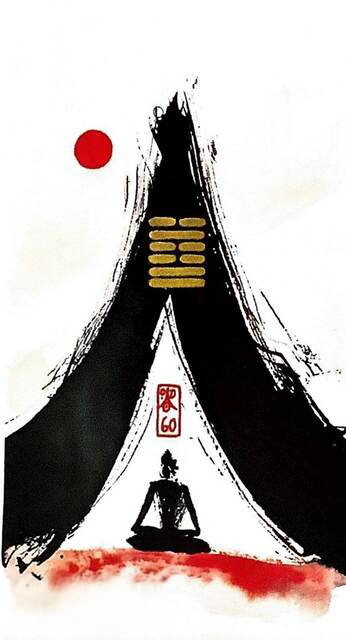

수택절
평괘 30
ㅅ -> 신중(적당한 강도로 적당한 절제)
(배추 키울때 끈으로 묶어두면 배추 속이 더 단단하게 자람)절제는 고통을 수반하지만 더 나은 미래를 보장한다동굴속에서 수행하는 도인의 모습.답답하지만 유혹에 넘어가지 않고 선을 지키는 상황을 표현한 그림
절제.절약.절도.검소.규칙.제한.한정.한계.자기훈련.숙련시킴.자존심.자긍심.성숙하다.내성.자기성찰.인내심.참을성.신중한판단.연구.은둔
연애운
애정표현 소극적.관심.흥미 떨어짐.혼자 있는 시간이 편함.철벽남녀
사업운
때를 기다려야 함.경험으로 쌓은 내공을 통한 노련미
속마음
썸본인 감정 표현 안하고 소극적인 마음
1년 이상관심 흥미 떨어지고 소극적인 마음
이별 후시간을 두고 신중하게 생각해 보고싶은 마음. 혼자가 편하다고 생각하는 마음
솔로연애운
새로운 이성 생길 확률 낮다
건강운
과음.과식.과로.위장병 주의